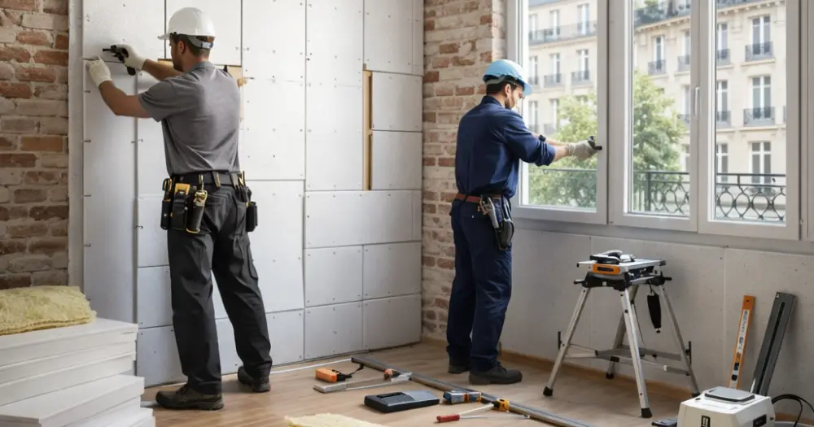

La rénovation énergétique à Paris en 2026 bénéficie d'un arsenal d'aides publiques et privées particulièrement attractif. Avec la hausse continue des prix de l'énergie et les nouvelles exigences du DPE, améliorer les performances énergétiques de votre logement devient une priorité absolue. Entre MaPrimeRénov', les Certificats d'Économie d'Énergie (CEE), l'Éco-prêt à taux zéro et les aides locales d'Île-de-France, les propriétaires parisiens disposent de dispositifs financiers considérables pour concrétiser leurs projets. Ce guide complet vous présente toutes les subventions disponibles en 2026, leurs conditions d'éligibilité et les montants accordés pour optimiser votre investissement en rénovation énergétique.
MaPrimeRénov' 2026 : La Prime Phare de la Rénovation Énergétique
MaPrimeRénov' demeure l'aide centrale de la rénovation énergétique Paris 2026, avec des montants revalorisés et des conditions élargies. Cette prime de l'Anah s'adresse à tous les propriétaires, qu'ils soient occupants ou bailleurs, sans condition de revenus depuis 2021. Pour 2026, les montants varient selon vos revenus et le type de travaux : isolation des combles (25€ à 75€/m²), changement de chaudière gaz par pompe à chaleur (4 000€ à 11 000€), isolation des murs extérieurs (50€ à 75€/m²). À Paris, où le coût des travaux est majoré de 15 à 20% par rapport à la moyenne nationale, ces aides représentent un levier financier déterminant. L'accompagnement Mon Accompagnateur Rénov' devient obligatoire pour les projets supérieurs à 5 000€, garantissant un suivi technique optimal de vos travaux.
Conditions d'Éligibilité MaPrimeRénov' 2026
Pour bénéficier de MaPrimeRénov' à Paris en 2026, votre logement doit être achevé depuis plus de 15 ans (ou 2 ans en cas de remplacement de chaudière fioul). Les travaux doivent être réalisés par un professionnel RGE (Reconnu Garant de l'Environnement). Les barèmes sont établis selon quatre profils de revenus : bleu (très modestes), jaune (modestes), violet (intermédiaires) et rose (supérieurs).
Certificats d'Économie d'Énergie (CEE) : Un Complément Financier Essentiel
Les Certificats d'Économie d'Énergie constituent un dispositif complémentaire incontournable pour votre rénovation énergétique Paris 2026. Financées par les fournisseurs d'énergie (EDF, Engie, Total...), ces primes peuvent atteindre des montants significatifs : jusqu'à 4 400€ pour une pompe à chaleur air-eau, 20€/m² pour l'isolation des combles, 15€/m² pour l'isolation des murs. En Île-de-France, la zone climatique H1 offre des bonifications particulièrement intéressantes. Ces aides se cumulent avec MaPrimeRénov' et ne dépendent pas de vos revenus. La démarche s'effectue avant signature du devis, directement auprès des fournisseurs d'énergie ou via des plateformes spécialisées. Attention aux démarchages abusifs : privilégiez toujours les acteurs reconnus et certifiés.
Optimiser ses CEE en Île-de-France
Pour maximiser vos CEE à Paris, comparez les offres de différents obligés énergétiques. Certains proposent des primes majorées ou des services additionnels (diagnostic, suivi des travaux). La zone climatique H1 de l'Île-de-France bénéficie de coefficients avantageux, particulièrement pour l'isolation et le chauffage.
Éco-prêt à Taux Zéro et Aides Locales Île-de-France 2026
L'Éco-prêt à taux zéro (Éco-PTZ) permet de financer jusqu'à 50 000€ de travaux de rénovation énergétique sans intérêts, remboursables sur 20 ans maximum. En 2026, ce dispositif s'est simplifié et peut se cumuler avec MaPrimeRénov'. Pour un projet global à Paris coûtant 40 000€, l'Éco-PTZ couvre l'intégralité des frais non subventionnés. La région Île-de-France propose également des aides spécifiques : chèque éco-énergie de 1 000€ à 3 000€, subventions pour les copropriétés, dispositifs communaux parisiens. Certains arrondissements parisiens offrent des aides complémentaires pour l'isolation ou le changement de chauffage. Ces financements locaux, méconnus, peuvent représenter 10 à 15% d'économies supplémentaires sur votre projet de rénovation énergétique.
Démarches Éco-PTZ Paris 2026
L'Éco-PTZ s'obtient auprès de votre banque partenaire (liste disponible sur service-public.fr). Le dossier nécessite devis détaillés, justificatifs de revenus et attestation RGE. La décision intervient sous 15 jours, permettant un démarrage rapide des travaux.
Coûts et Rentabilité des Travaux de Rénovation Énergétique à Paris
Les prix de la rénovation énergétique à Paris en 2026 reflètent la spécificité du marché francilien. Comptez 150€ à 250€/m² pour l'isolation extérieure, 8 000€ à 18 000€ pour une pompe à chaleur air-eau, 40€ à 80€/m² pour l'isolation des combles perdus. Ces tarifs, supérieurs de 15 à 25% à la moyenne nationale, s'expliquent par la complexité des chantiers parisiens (accès difficile, contraintes architecturales, normes strictes). Cependant, avec les aides cumulées, votre reste à charge diminue considérablement : pour une rénovation globale de 50 000€, les subventions peuvent couvrir 35 à 60% du montant selon vos revenus. La rentabilité s'évalue aussi par les économies d'énergie générées : 30 à 50% de réduction sur vos factures énergétiques, plus-value immobilière de 5 à 15%, amélioration du confort thermique.
Simulation de Projet Type Paris 17ème
Rénovation appartement 80m² : isolation murs (12 000€), VMC double flux (4 500€), fenêtres triple vitrage (8 000€). Total : 24 500€. Aides possibles : MaPrimeRénov' 6 500€ + CEE 3 200€ + Éco-PTZ complément. Reste à charge : environ 14 800€.
Choisir son Professionnel RGE pour sa Rénovation Énergétique Paris
La certification RGE (Reconnu Garant de l'Environnement) est obligatoire pour bénéficier des aides rénovation énergétique Paris 2026. Cette qualification garantit la compétence technique et le respect des normes environnementales. À Paris, privilégiez les entreprises locales connaissant les spécificités du bâti parisien : contraintes architecturales, réglementations urbaines, copropriétés. Mistral Pro Reno, entreprise certifiée RGE basée dans le 17ème arrondissement, maîtrise parfaitement ces enjeux franciliens. Vérifiez systématiquement la validité des certifications RGE (durée 4 ans), demandez plusieurs devis détaillés, consultez les avis clients et références chantiers. Un bon professionnel vous accompagne dans les démarches administratives, optimise le montage financier et garantit la qualité d'exécution. En Île-de-France, comptez 3 à 6 semaines de délai pour un audit énergétique complet.
Critères de Sélection d'une Entreprise RGE Paris
Vérifiez l'ancienneté (minimum 3 ans), la proximité géographique, les assurances professionnelles, les références en rénovation parisienne. Exigez un devis détaillé mentionnant les aides mobilisables et les performances énergétiques visées.
Calendrier et Démarches Optimisées 2026
Pour réussir votre rénovation énergétique Paris 2026, respectez un calendrier optimal. Débutez par un audit énergétique (1 500€ à 2 500€, remboursable via MaPrimeRénov') définissant les travaux prioritaires. Constituez ensuite vos dossiers d'aides avant signature des devis : MaPrimeRénov' (délai 15 jours), CEE (variable selon fournisseur), Éco-PTZ (15 jours bancaires). Planifiez vos travaux entre mars et octobre pour optimiser les conditions d'intervention. En copropriété parisienne, anticipez 6 à 12 mois pour les votes en assemblée générale. Les nouvelles plateformes numériques 2026 simplifient les démarches : France Rénov' centralise les demandes, Mon Accompagnateur Rénov' vous guide techniquement. Cette organisation méthodique garantit un projet serein, des délais maîtrisés et une optimisation financière maximale de votre rénovation énergétique.
Planning Type Rénovation Énergétique
Mois 1-2 : Audit et choix professionnel. Mois 3 : Constitution dossiers aides. Mois 4-5 : Validation financements et commandes matériaux. Mois 6-8 : Réalisation travaux. Mois 9 : Contrôles et finalisation administrative.
La rénovation énergétique Paris 2026 n'a jamais été aussi accessible financièrement grâce à la convergence des aides publiques et privées. Avec MaPrimeRénov', les CEE, l'Éco-PTZ et les dispositifs franciliens, vous pouvez réduire significativement votre investissement tout en valorisant votre patrimoine immobilier. L'expertise d'un professionnel RGE expérimenté comme Mistral Pro Reno garantit l'optimisation de votre projet et le respect des exigences techniques. N'attendez plus pour transformer votre logement en un cocon énergétiquement performant et confortable, adapté aux défis climatiques de demain.
Questions fréquentes
Quel est le montant maximum des aides pour une rénovation énergétique à Paris en 2026 ?
Le cumul maximal peut atteindre 20 000€ à 25 000€ selon vos revenus : MaPrimeRénov' (jusqu'à 11 000€), CEE (4 000€ à 5 000€), aides locales (2 000€ à 3 000€), plus l'Éco-PTZ pour le financement complémentaire.
Les aides 2026 sont-elles cumulables entre elles ?
Oui, MaPrimeRénov', CEE, Éco-PTZ et aides locales sont cumulables. Seule limite : le montant total des aides ne peut dépasser 90% du coût des travaux pour éviter les effets d'aubaine.
Combien de temps pour obtenir MaPrimeRénov' en 2026 ?
Le délai moyen est de 15 jours ouvrés après dépôt du dossier complet sur maprimerenov.gouv.fr. Le paiement intervient sous 15 jours après transmission de la facture des travaux réalisés.
Un locataire peut-il bénéficier d'aides pour la rénovation énergétique ?
Non, seuls les propriétaires occupants ou bailleurs peuvent prétendre aux aides principales. Cependant, le locataire peut inciter son propriétaire en mettant en avant la valorisation du bien et les avantages fiscaux.
Besoin d'un devis pour votre projet ?
Obtenez une estimation gratuite en quelques clics avec notre simulateur.
Simulateur de Devis Gratuit